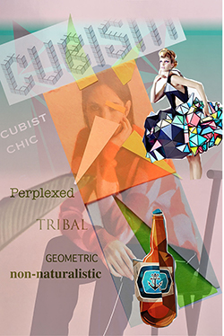
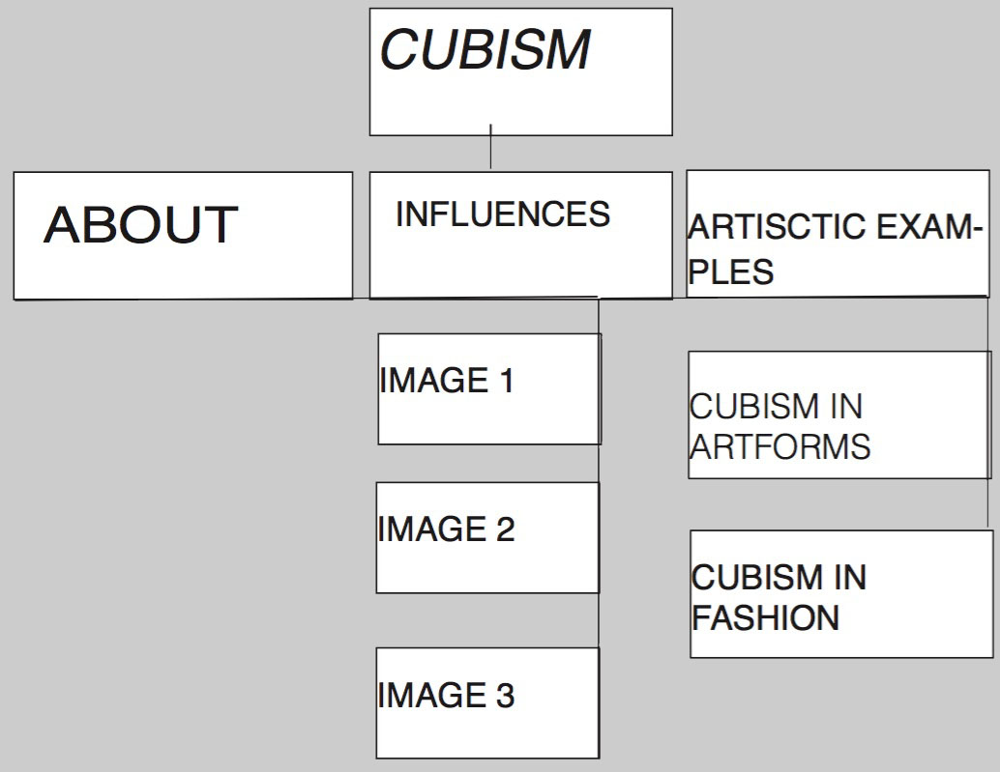

MOODBOARD
ABOUT
As this is my very first attempt with building websites, I haven't taken much consideration to creating an aesthetic and beautiful design this early in the process but one rather easy to navigate around.
TYPOGRAPHY
I’ve decided to go for a standard font like Open Sans, a sans-serif typeface, that’s said to “add a neutral, friendly appearance to any mobile devices.” This typeface also works well in various sizes, which is of utter importance when users access with different screen sizes. I’ll keep the linelenght to a minimum (i.e. 25-30 characters) in order not to break the reader’s rhytm.
LOGO
As to the logo, I was playing around with triangle and rectangu- lar shapes along with my initials (IM). This resulted in an “M” on top of an “I” that ultimately takes the shape of a butter y. I think this logo represents my own personal style as well as my per- ception of cubism. I decided to use the bottom right illustration as my logo and I will create it in Adobe Illustrator when the time comes. As this is my very first attempt with building websites, I haven't taken much consideration to creating an aesthetic and beautiful design this early in the process but one rather easy to navigate around
COLOR SCHEME
The color scheme reflects the colors picked out from the moodboard. As cubism in it's artform can be both dark (ie. dark-red, brown colors) and pastel, I tried to combine the two.
IMAGE ASSETS

FOLDER STRUCTURE
